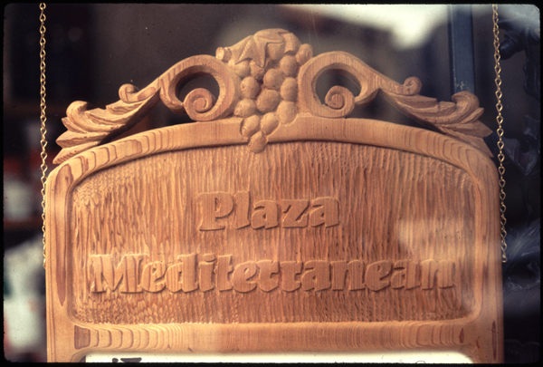

Wood Carvings

1971-PlazaMed3.jpg - Plaza Mediteranean Deli was called Zoccoli's Deli. It was an inside sign with a slot in the side to allow the daily specials to be slid in. It was executed in clear heart redwood.